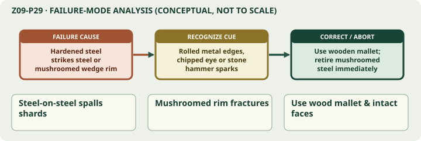

Z09-P29 · Tools and construction · New manuscript
Drive wooden wedges and stakes without steel-on-steel spalling
Prevent high-velocity metal-chip eye injuries and damaged tools when driving stakes, wedges or pegs.
When it applies · Driving tent stakes, splitting wedges or wooden pegs in camp or field maintenance.
Equipment · Wooden mallet, rubber/dead-blow hammer or smooth wooden billet; eye protection where available.

Actions
- Never strike hardened steel against hardened steel (such as hammering an axe poll with a sledgehammer or driving a steel wedge with a hatchet back)—brittle steel can spall razor-sharp chips at bullet-like speed.[K12, K02]
- Use a stout wooden club, rubber mallet or dedicated flat-faced soft hammer to drive tent stakes and plastic/wooden splitting wedges, keeping fingers clear of the strike top.[K12, K08, ED]
- Inspect metal wedge heads and chisels regularly—mushroomed rolled rims fracture off violently under blows and must be properly dressed in a shop or retired from use.[K02, K12]
Failure recognition · Pounding the hardened back of a camp axe with a rock or metal hammer to force it through a stubborn log, splitting the eye and throwing steel shrapnel.[K12, K02]
Verify · Confirm soft-on-hard or wood-on-wood striking pairing, intact un-mushroomed faces and bystanders clear of potential chip paths.[K12, K08, ED]
Stop or change course · Retire any chisel, wedge or hammer displaying mushroomed edges, cracked eyes or chipped polls immediately.[K02, K12]
Evidence and editorial notes
- K02 · OSHA · Hand and Power Tools (OSHA 3080) (agency PDF)
- Section: Hand Tools > Knives, Chisels, Impact and Wrenches · Conditions: Manual cutting, striking and prying operations
Support: Direct cutting blades away from the body and bystanders, never use cracked wooden handles or mushroomed striking heads, and do not substitute wrenches or blades as pry bars.
Limitations: Does not specify material tensile ratings for improvised handles. · Conflicting evidence: None; directly informs safe cutting and impact-tool failure cards.
Editorial note: Prevents blade slip, splintered-handle and spalling-metal injuries. · Specialist reviewer: Tool safety and wilderness medicine
Primary source · checked 2026-11-24
Current assessment · A04-K02 (2026-11-25) · Open: support partial or missing (A04): Supports misuse and defective equipment limits in occupational work. Exact cutting lane and equipment guidance varies by tool kept under specialist review. Limits: Specialist review PENDING (Tool safety and wilderness medicine); publication HOLD. All release decisions pending. - K08 · OSHA · Hand and Power Tools (OSHA 3080) (agency PDF)
- Section: Personal Protective Equipment and Work Area Control · Conditions: Cutting, splitting, striking and rigging operations
Support: Maintain stable footing, eye and hand protection appropriate to flying chips or snapped cordage, and clear bystanders outside the swing or snap-back zone.
Limitations: Field kits often lack shop PPE, requiring slower conservative technique and lower-energy methods. · Conflicting evidence: None; drives snap-back and work-circle exclusion zones in Z09.
Editorial note: Enforces conservative work circles and snap-back clearance. · Specialist reviewer: Tool safety and occupational safety
Primary source · checked 2026-11-24
Current assessment · A04-K08 (2026-11-25) · Open: support partial or missing (A04): Eye protection requirements are task-specific. Safe stance, glove choice and recoil envelope require each tool or rigging source. Limits: Specialist review PENDING (Tool safety and occupational safety); publication HOLD. All release decisions pending. - K12 · USDA Forest Service · Handtools for Trail Work (0523-2810-MTDC) (agency handbook)
- Section: Wedges, Chisels and Striking Surfaces · Conditions: Splitting deadwood or driving stakes with hand tools
Support: Avoid steel-on-steel striking of hardened axe polls or unguarded wedges that can chip metal shards; use wooden mallets or purpose-designed striking faces and retire mushroomed heads.
Limitations: Improvised stone hammers fracture unpredictably and throw sharp flakes. · Conflicting evidence: None; informs baton/wedge/mallet safety cards.
Editorial note: Guides safe splitting, stake driving and struck-tool failure recognition. · Specialist reviewer: Tool safety and materials safety
Primary source · checked 2026-11-24
Source lineage · USFS handtools and OSHA 3080; new manuscript · Classification · New manuscript.